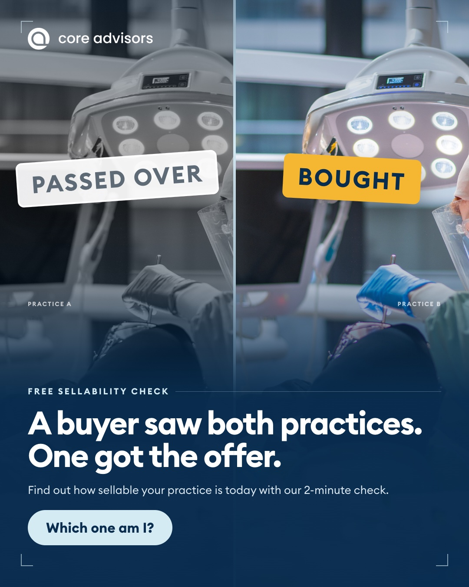
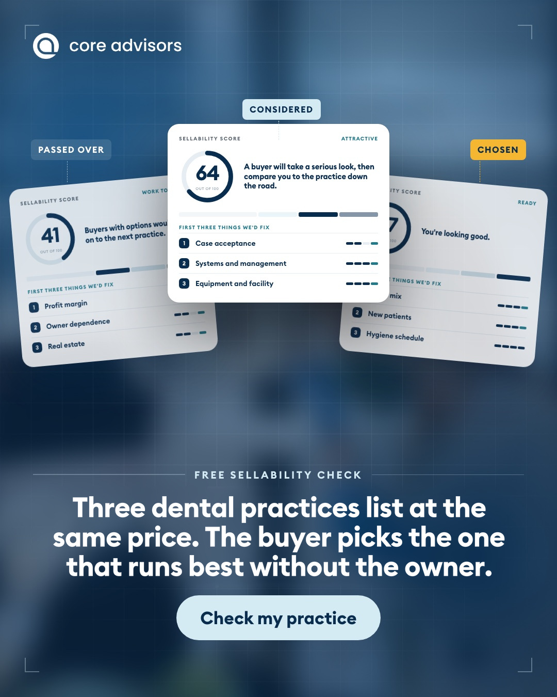
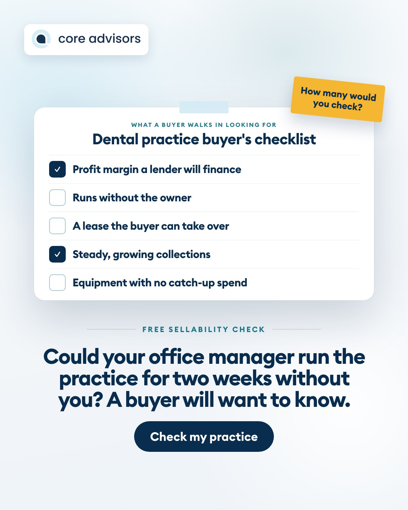
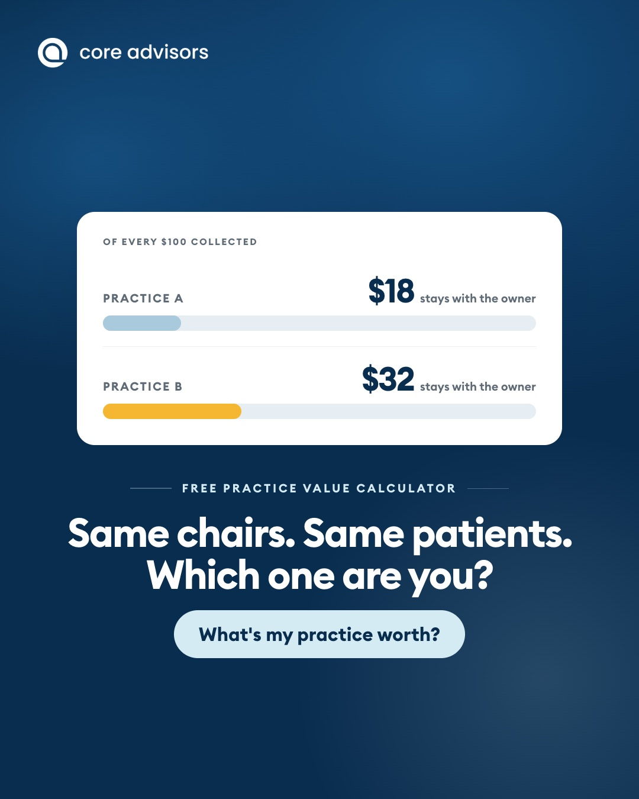
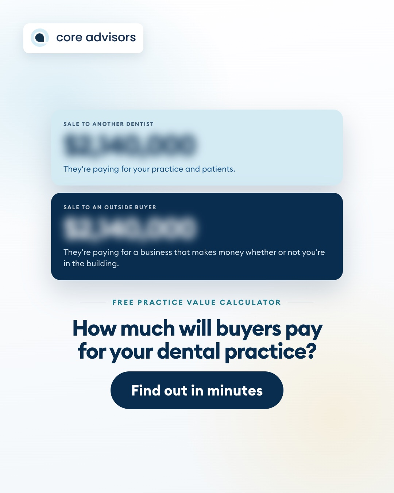
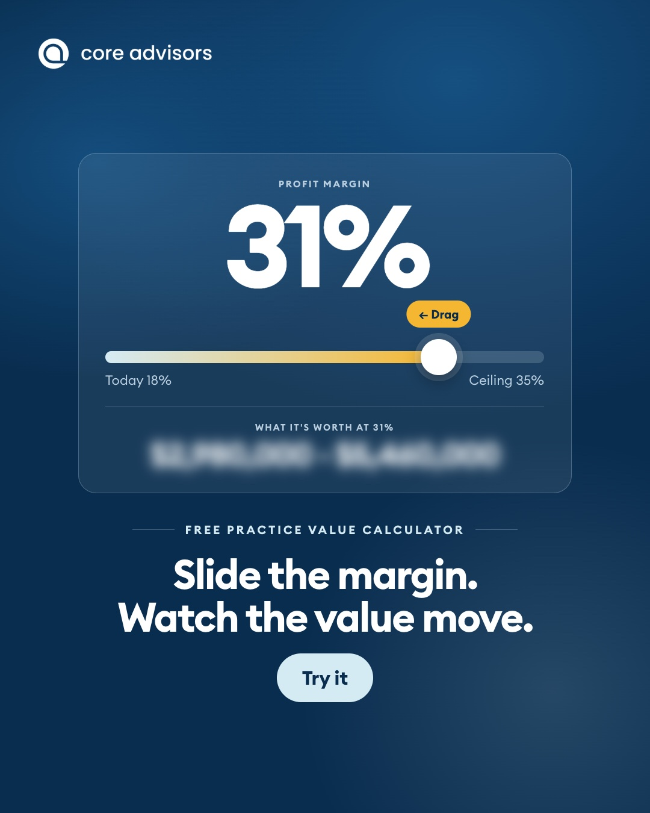
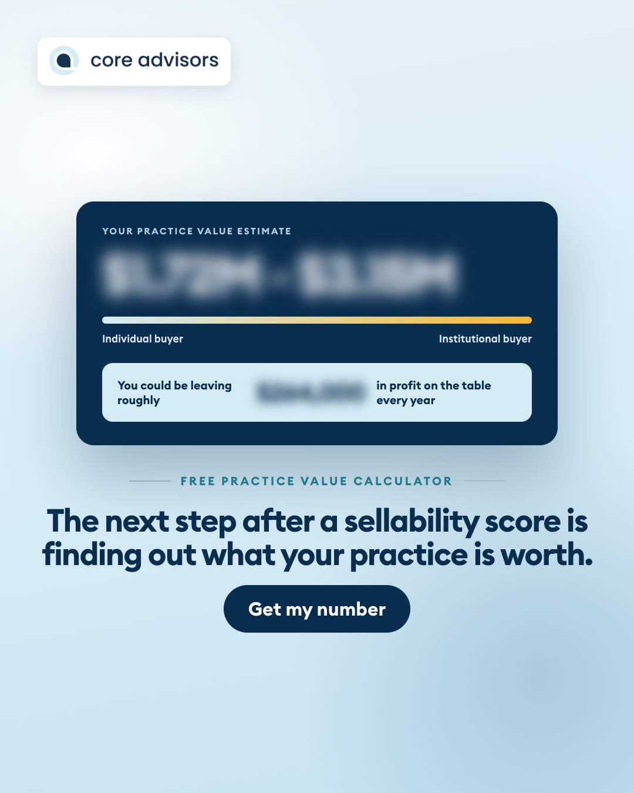
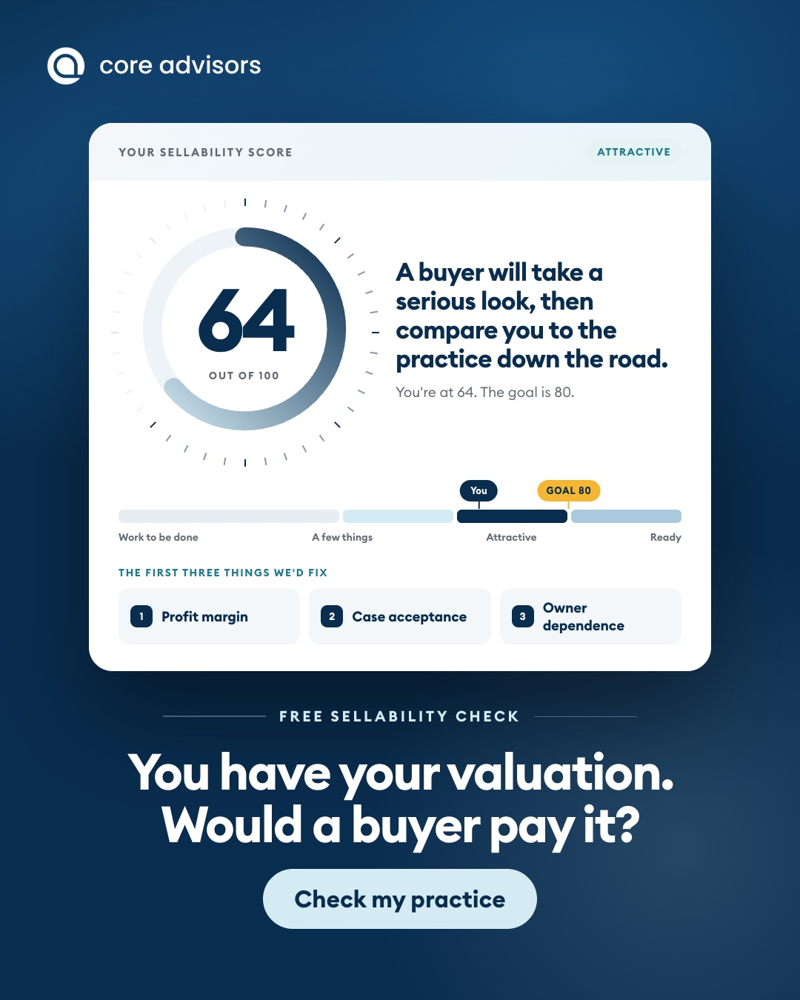

Core Advisors · Exit planning adsHow the nine ads will look in the Facebook feed. Tap "See more" to read the full text.
Core AdvisorsSponsored · ···
Our free Sellability Check scores your dental practice out of 100 the way a buyer would, and it takes about two minutes. ... Our free Sellability Check scores your dental practice out of 100 the way a buyer would, and it takes about two minutes.
When you sell a house, a realtor walks through first and tells you what to fix so you get more offers. A buyer looks at your practice in much the same way.
They start with your profit margin, how many treatment plans patients accept and how much of the production depends on you.
Your results show your score and the first three things we'd fix, along with where buyers want to see each one. You won't need any financial numbers to answer the questions.
👉 Tap Learn more to take the free check.

COREADVISORS.COMWhat would a buyer want you to fix?
Learn more
243 comments · 2 shares
👍 Like💬 Comment↗ Share
Core AdvisorsSponsored · ···
Take our free two-minute Sellability Check to see how your dental practice compares when a buyer is choosing between offices. ... Take our free two-minute Sellability Check to see how your dental practice compares when a buyer is choosing between offices.
Buyers usually look at several practices before they make an offer. They tend to pick the one that will keep running well after the owner leaves.
The check asks about the things they compare, like your margin, your case acceptance and how much of the schedule depends on you.
You'll get a score out of 100 and the first three things we'd work on. Most of them can be improved years before you sell.
👉 Tap Learn more to see your score.

COREADVISORS.COMWould a buyer pick your practice?
Learn more
243 comments · 2 shares
👍 Like💬 Comment↗ Share
Core AdvisorsSponsored · ···
Our free Sellability Check asks the questions a buyer will ask about your dental practice and scores your answers out of 100. ... Our free Sellability Check asks the questions a buyer will ask about your dental practice and scores your answers out of 100.
One of the first things a buyer wants to know is whether the practice keeps running when you're away. If your office manager could run things for two weeks without calling you, that counts in your favor.
The check takes about two minutes, and you won't need any financial numbers. Your results show your score and the first three things we'd fix before a buyer takes a look.
👉 Tap Learn more to start the free check.

COREADVISORS.COMCould your practice run without you?
Learn more
243 comments · 2 shares
👍 Like💬 Comment↗ Share
Core AdvisorsSponsored · ···
Our free Practice Value Calculator shows what your dental practice could sell for, using five numbers from your P&L. ... Our free Practice Value Calculator shows what your dental practice could sell for, using five numbers from your P&L.
When you sell a car, the trade-in price and the private-sale price can be far apart, and a practice works much the same way.
Selling to another dentist usually brings one price. Selling to a DSO or an outside buyer usually brings a higher one.
The calculator gives you both ends of that range in about two minutes, along with what the practice could be worth at a higher profit margin.
👉 Tap Learn more to see both of your prices.
COREADVISORS.COMDo you know your practice's two prices?
Learn more
243 comments · 2 shares
👍 Like💬 Comment↗ Share
Core AdvisorsSponsored · ···
Our free Practice Value Calculator shows what your dental practice is worth today, based on the profit it keeps. ... Our free Practice Value Calculator shows what your dental practice is worth today, based on the profit it keeps.
Two practices can each collect $2 million a year and still sell for very different prices, because a buyer prices a practice on its profit.
The calculator uses five numbers from your P&L to give you a value range, from a sale to another dentist up to a sale to an outside buyer. It also shows what the same practice could be worth at a higher margin.
👉 Tap Learn more to try it with your numbers. It takes about two minutes.

COREADVISORS.COMHow much of every $100 do you keep?
Learn more
243 comments · 2 shares
👍 Like💬 Comment↗ Share
Core AdvisorsSponsored · ···
Our free Practice Value Calculator gives you a sale price range for your dental practice from five numbers on your P&L. ... Our free Practice Value Calculator gives you a sale price range for your dental practice from five numbers on your P&L.
We work only with dentists, and one of the first questions owners ask us is what their practice would sell for. Our honest answer is that it depends on who's buying.
An associate or another dentist will usually pay one price, and a DSO or investor will usually pay more for the same practice.
👉 Tap Learn more to see what each buyer might pay. It takes about two minutes.

COREADVISORS.COMWhat would a DSO pay for your practice?
Learn more
243 comments · 2 shares
👍 Like💬 Comment↗ Share
Core AdvisorsSponsored · ···
Our free Practice Value Calculator shows what your practice is worth now and what it could be worth at a higher margin. ... Our free Practice Value Calculator shows what your practice is worth now and what it could be worth at a higher margin.
A buyer pays a multiple of your profit, so each extra dollar you keep every year adds several dollars to your sale price.
After you enter five numbers from your P&L, you can move the margin slider and watch your value range change. It's a quick way to see how much of your future sale price you can still build inside the practice you own today.
👉 Tap Learn more to try the calculator.

COREADVISORS.COMWhat is a higher margin worth to you?
Learn more
243 comments · 2 shares
👍 Like💬 Comment↗ Share
Core AdvisorsSponsored · ···
Now that you have your sellability score, our free Practice Value Calculator shows what your practice could sell for. ... Now that you have your sellability score, our free Practice Value Calculator shows what your practice could sell for.
It uses five numbers from your P&L and gives you a range, from a sale to another dentist up to a sale to a DSO or an outside buyer.
With your score and your range side by side, you'll know which numbers to work on first.
👉 Tap Learn more to get your range. It takes about two minutes.

COREADVISORS.COMWhat is your practice worth?
Learn more
243 comments · 2 shares
👍 Like💬 Comment↗ Share
Core AdvisorsSponsored · ···
Now that you know your value range, our free Sellability Check shows whether a buyer would be ready to pay it. ... Now that you know your value range, our free Sellability Check shows whether a buyer would be ready to pay it.
We watched one dentist sell to a DSO before the practice could run without him, and the deal fell apart.
The check asks the questions a buyer will ask about your margin, your case acceptance and how much of the work depends on you. You'll get a score out of 100 and the first three things we'd fix, and you won't need any financial numbers.
👉 Tap Learn more to take the free check. It takes about two minutes.

COREADVISORS.COMIs your practice ready for a buyer?